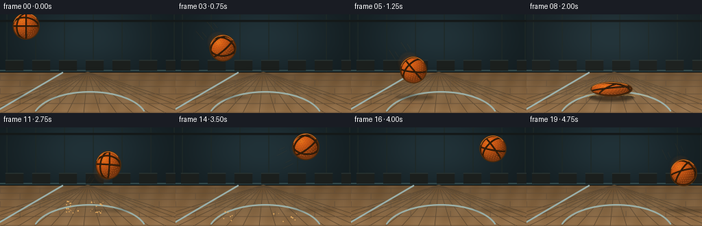
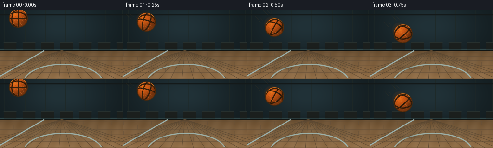

CODING AGENTS AS PIXEL WORLD MODELS
traex/GPT-5.6-Sol · phygen_027
点击播放 · 原生 RGB 像素
逐轮保存的候选
回放视频、检查图与代码变化。
每份候选均可单独播放。实际图片检查记录在下方工具轨迹中。
候选 01播放与检查图
点击播放 · 原生 RGB 像素


展开代码变化
--- 上一保存版本
+++ 本次保存版本
@@ -0,0 +1,329 @@
+from pathlib import Path
+import math
+import cv2
+import numpy as np
+from artifact_io import save
+
+# Deterministic procedural animation; no external assets.
+CASE_DIR = Path(__file__).resolve().parent
+W, H, N = 256, 144, 20
+S = 4
+WW, HH = W*S, H*S
+GROUND = 119.0
+rng = np.random.default_rng(2701)
+
+# Hand-tuned ballistic arc, with explicit compression/decompression at impact.
+centers = np.array([
+ (38,17), (48,25), (58,36), (69,49), (80,64),
+ (91,81), (102,99), (113,104), (124,109), (136,94),
+ (147,72), (158,55), (169,42), (180,33), (190,28),
+ (199,27), (207,31), (215,39), (222,51), (229,66)
+], dtype=np.float32)
+radii = np.array([
+ (19,19), (19,19), (19,19), (19,19), (19,19),
+ (19,19), (19,19), (23,15), (30,10), (15,25),
+ (17,22), (18,20), (19,19), (19,19), (19,19),
+ (19,19), (19,19), (19,19), (19,19), (19,19)
+], dtype=np.float32)
+
+# Stable surface points for the pebbled leather.
+M = 380
+golden = math.pi * (3.0 - math.sqrt(5.0))
+pebbles = []
+for k in range(M):
+ z = 1.0 - 2.0*(k + 0.5)/M
+ rr = math.sqrt(max(0.0, 1.0-z*z))
+ a = golden*k
+ pebbles.append([rr*math.cos(a), rr*math.sin(a), z])
+pebbles = np.asarray(pebbles, np.float32)
+
+# Impact debris particles: x/y velocities in image pixels per frame.
+particles = []
+prng = np.random.default_rng(991)
+for side in (-1, 1):
+ for _ in range(14):
+ particles.append((side*prng.uniform(2.0, 9.0), prng.uniform(1.2, 7.5), prng.uniform(.45, 1.25)))
+
+
+def alpha_over(base, layer):
+ """Alpha composite uint8 BGRA layer onto uint8 BGR base."""
+ a = layer[..., 3:4].astype(np.float32) / 255.0
+ base[:] = np.clip(layer[..., :3].astype(np.float32)*a + base.astype(np.float32)*(1-a), 0, 255).astype(np.uint8)
+
+
+def soft_ellipse(img, cx, cy, rx, ry, bgr, alpha, blur=0):
+ lay = np.zeros((HH, WW, 4), np.uint8)
+ cv2.ellipse(lay, (int(cx*S), int(cy*S)), (max(1,int(rx*S)), max(1,int(ry*S))), 0, 0, 360,
+ (*bgr, int(alpha)), -1, cv2.LINE_AA)
+ if blur:
+ k = max(3, int(blur*S)*2+1)
+ lay = cv2.GaussianBlur(lay, (k,k), blur*S)
+ alpha_over(img, lay)
+
+
+def make_background():
+ # BGR working canvas; converted to RGB on output.
+ im = np.zeros((HH, WW, 3), np.uint8)
+ yy, xx = np.mgrid[0:HH, 0:WW]
+ y = yy / S
+ x = xx / S
+ wall = y < 85
+ # Moody teal gym wall with a broad central spotlight.
+ glow = np.exp(-(((x-126)/104)**2 + ((y-33)/58)**2))
+ im[...,0] = np.where(wall, 30 + 26*glow, 0).astype(np.uint8)
+ im[...,1] = np.where(wall, 27 + 23*glow, 0).astype(np.uint8)
+ im[...,2] = np.where(wall, 18 + 15*glow, 0).astype(np.uint8)
+
+ # Wall panels, beams and distant bleacher-like geometry.
+ for xp in [10, 52, 94, 136, 178, 220, 254]:
+ cv2.line(im, (xp*S, 0), (xp*S, 85*S), (38,40,30), 1*S, cv2.LINE_AA)
+ cv2.rectangle(im, (0, 8*S), (WW, 11*S), (25,25,20), -1)
+ cv2.line(im, (0, 82*S), (WW,82*S), (72,70,48), 2*S, cv2.LINE_AA)
+ cv2.line(im, (0, 85*S), (WW,85*S), (18,20,17), 2*S, cv2.LINE_AA)
+ for i in range(7):
+ x0 = (8 + i*39)*S
+ cv2.rectangle(im, (x0, 67*S), (min(WW-1,x0+26*S),82*S), (29,31,27), -1)
+ cv2.line(im, (x0,67*S), (min(WW-1,x0+26*S),67*S), (50,52,42), S, cv2.LINE_AA)
+
+ # Polished maple floor, warm and brighter toward the foreground.
+ floor = ~wall
+ fy = np.clip((y-85)/59, 0, 1)
+ grain = 3*np.sin(x*.23 + y*.08) + 2*np.sin(x*.057-y*.17)
+ im[...,0] = np.where(floor, 52 + 22*fy + grain, im[...,0]).astype(np.uint8)
+ im[...,1] = np.where(floor, 82 + 31*fy + grain, im[...,1]).astype(np.uint8)
+ im[...,2] = np.where(floor, 109 + 40*fy + grain, im[...,2]).astype(np.uint8)
+
+ # Perspective floor seams converging to the center-back of the court.
+ vanish = (128*S, 84*S)
+ for xb in range(-70, 330, 24):
+ cv2.line(im, vanish, (xb*S, HH), (48,71,91), max(1,S//2), cv2.LINE_AA)
+ # Increasingly spaced cross-plank seams.
+ for yf in [89, 96, 105, 116, 130, 143]:
+ cv2.line(im, (0,yf*S), (WW,yf*S), (55,78,99), max(1,S//2), cv2.LINE_AA)
+ # Staggered subtle plank end joints.
+ for row, yf in enumerate([96,105,116,130]):
+ for xp in range((row%2)*29, 256, 58):
+ cv2.line(im, (xp*S,(yf-8)*S), (xp*S,yf*S), (58,80,101), max(1,S//2), cv2.LINE_AA)
+
+ # Court paint: a restrained pale-blue sideline and an arc at the foreground.
+ cv2.line(im, (-5*S,141*S), (91*S,85*S), (176,180,157), 2*S, cv2.LINE_AA)
+ cv2.ellipse(im, (131*S,153*S), (83*S,40*S), 0, 198, 342, (170,178,158), 2*S, cv2.LINE_AA)
+ # Soft overhead reflection bands on varnish.
+ refl = np.zeros((HH,WW,4), np.uint8)
+ cv2.ellipse(refl, (128*S,112*S), (105*S,21*S), 0, 0, 360, (155,166,142,13), -1, cv2.LINE_AA)
+ refl = cv2.GaussianBlur(refl, (0,0), 8*S)
+ alpha_over(im, refl)
+ return im
+
+BACKGROUND = make_background()
+
+
+def rodrigues(axis, ang):
+ axis = np.asarray(axis, np.float64)
+ axis /= np.linalg.norm(axis)
+ x,y,z = axis
+ K = np.array([[0,-z,y],[z,0,-x],[-y,x,0]], np.float64)
+ return np.eye(3)*math.cos(ang) + (1-math.cos(ang))*np.outer(axis,axis) + math.sin(ang)*K
+
+
+def draw_speed_lines(im, f, cx, cy, vx, vy):
+ speed = math.hypot(vx,vy)
+ if speed < 11 or f in (7,8):
+ return
+ # Short, tapered impressionistic streaks behind trajectory.
+ ux, uy = vx/speed, vy/speed
+ layer = np.zeros((HH,WW,4), np.uint8)
+ offsets = [-13,-7,8,14]
+ for j,off in enumerate(offsets):
+ px = cx + (-uy)*off
+ py = cy + ux*off
+ length = 10 + (j%2)*7
+ p1 = (int((px-ux*27)*S), int((py-uy*27)*S))
+ p2 = (int((px-ux*(27+length))*S), int((py-uy*(27+length))*S))
+ cv2.line(layer, p1,p2, (62,166,247,45 if f<9 else 35), max(1,S//2), cv2.LINE_AA)
+ layer = cv2.GaussianBlur(layer, (0,0), .45*S)
+ alpha_over(im,layer)
+
+
+def draw_motion_trail(im, f):
+ if f == 0 or f in (7,8):
+ return
+ cx,cy = centers[f]
+ px,py = centers[f-1]
+ vx,vy = cx-px, cy-py
+ speed = float(math.hypot(vx,vy))
+ if speed < 8:
+ return
+ # Faint orange after-images on the opposite side of travel.
+ for q, a in [(0.62, 18), (0.34, 29)]:
+ tx = cx-vx*q
+ ty = cy-vy*q
+ rx,ry = radii[f]
+ soft_ellipse(im,tx,ty,rx*.83,ry*.83,(17,91,208),a,blur=2.2)
+ draw_speed_lines(im,f,cx,cy,vx,vy)
+
+
+def draw_shadow_and_reflection(im, f):
+ cx,cy = centers[f]
+ rx,ry = radii[f]
+ altitude = max(0.0, GROUND-(cy+ry))
+ closeness = math.exp(-altitude/24.0)
+ shadow_rx = 10 + rx*.78 + altitude*.17
+ shadow_ry = 2.0 + 4.2*closeness
+ soft_ellipse(im,cx+altitude*.10,GROUND+2,shadow_rx,shadow_ry,(9,14,16),int(38+103*closeness),blur=2.5)
+ # Varnish reflection, strongest when the ball approaches the surface.
+ if altitude < 42:
+ refl_y = GROUND + max(4, GROUND-cy)*.30
+ soft_ellipse(im,cx,refl_y,rx*.72,max(2,ry*.25),(13,64,160),int(34*closeness),blur=3.0)
+
+
+def draw_impact(im, f):
+ # Contact rings and floor-brightening compression wave.
+ strength = {7:.35,8:1.0,9:.78,10:.35}.get(f,0)
+ if strength:
+ lay = np.zeros((HH,WW,4),np.uint8)
+ cx = centers[8,0]
+ for ring in range(2):
+ age = max(0,f-7)+ring*.7
+ ax = (19 + age*15 + ring*10)*S
+ ay = (2.2 + age*.8)*S
+ cv2.ellipse(lay,(int(cx*S),int((GROUND+1)*S)),(int(ax),int(ay)),0,180,360,
+ (104,198,255,int(105*strength/(ring+1))),max(1,S),cv2.LINE_AA)
+ alpha_over(im,lay)
+ # Dust blooms hug the floor during compression and launch.
+ if f in (7,8,9,10):
+ age = f-7
+ drng = np.random.default_rng(420+f)
+ dust = np.zeros((HH,WW,4),np.uint8)
+ for j in range(24):
+ side = -1 if j%2==0 else 1
+ x = centers[8,0] + side*(6 + drng.uniform(0,24)*(age+1)/3)
+ y = GROUND - drng.uniform(0,4+age*3)
+ rad = drng.uniform(1.3,4.2)*(1+.12*age)
+ cv2.circle(dust,(int(x*S),int(y*S)),int(rad*S),(105,159,196,int((42+35*strength)/(1+.15*age))),-1,cv2.LINE_AA)
+ dust=cv2.GaussianBlur(dust,(0,0),1.5*S)
+ alpha_over(im,dust)
+ # Individual bright chips/debris follow tiny ballistic arcs after frame 8.
+ if f >= 8:
+ age=f-8
+ for vx,vy,rad in particles:
+ x=124 + vx*age
+ y=GROUND-2 - vy*age + 1.35*age*age
+ if -3<x<259 and 84<y<143:
+ col=(95,169,225)
+ cv2.circle(im,(int(x*S),int(y*S)),max(1,int(rad*S)),col,-1,cv2.LINE_AA)
+ # Crisp contact flash at maximum squash.
+ if f==8:
+ lay=np.zeros((HH,WW,4),np.uint8)
+ for ang in np.linspace(math.pi+.16,2*math.pi-.16,11):
+ l=prng.uniform(8,18)
+ x2=124+math.cos(ang)*l
+ y2=GROUND+math.sin(ang)*l*.34
+ cv2.line(lay,(124*S,int((GROUND-1)*S)),(int(x2*S),int(y2*S)),(145,218,255,125),S,cv2.LINE_AA)
+ alpha_over(im,lay)
+
+
+def draw_ball(im, f):
+ cx,cy = centers[f]
+ rx,ry = radii[f]
+ # Bounding box in supersampled pixels.
+ pad=3*S
+ x0=max(0,int((cx-rx)*S)-pad); x1=min(WW,int((cx+rx)*S)+pad+1)
+ y0=max(0,int((cy-ry)*S)-pad); y1=min(HH,int((cy+ry)*S)+pad+1)
+ gy,gx=np.mgrid[y0:y1,x0:x1]
+ nx=(gx/S-cx)/rx
+ ny=(gy/S-cy)/ry
+ rr=nx*nx+ny*ny
+ mask=np.clip((1.015-rr)*S*2.1,0,1)
+ nz=np.sqrt(np.clip(1-rr,0,1))
+ # Directional light from upper-left, plus strong tactile rim and specular bloom.
+ light=np.array([-0.48,-0.63,0.61])
+ lam=np.clip(nx*light[0]+ny*light[1]+nz*light[2],-.35,1)
+ shade=.50+.48*np.clip(lam,0,1)
+ shade*=.84+.16*nz
+ spec=np.exp(-((nx+.34)**2+(ny+.43)**2)/.055)*.33
+ # Fine deterministic leather grain in local image coordinates.
+ grain=(np.sin(nx*113+ny*47+f*.03)+np.sin(nx*61-ny*137))*0.018
+ # Vibrant basketball orange in RGB converted here to BGR channels.
+ base=np.empty((*rr.shape,3),np.float32)
+ base[...,0]=24*shade + 12*spec
+ base[...,1]=104*shade + 52*spec
+ base[...,2]=242*shade + 13*spec
+ base*= (1+grain[...,None])
+ # Warm reflected court light along the lower edge.
+ bounce=np.clip((ny-.25)*.32,0,.18)[...,None]
+ base += bounce*np.array([25,34,45])
+ a=mask[...,None]
+ dst=im[y0:y1,x0:x1].astype(np.float32)
+ im[y0:y1,x0:x1]=np.clip(base*a+dst*(1-a),0,255).astype(np.uint8)
+
+ # Rotation follows travel, with a slightly oblique axis to reveal spherical seams.
+ ang=f*.55 + (.35 if f>=9 else 0)
+ R=rodrigues((.28,.78,.55),ang)
+
+ # Pebbled leather pores, carried by the rotating sphere.
+ pts=pebbles@R.T
+ visible=pts[:,2]>.12
+ for p in pts[visible]:
+ xx=int((cx+rx*p[0])*S); yy=int((cy+ry*p[1])*S)
+ if 1<=xx<WW-1 and 1<=yy<HH-1:
+ rad=1 if p[2]<.65 else max(1,S//2)
+ cv2.circle(im,(xx,yy),rad,(13,66,151),-1,cv2.LINE_AA)
+ if p[2]>.58:
+ cv2.circle(im,(xx-1,yy-1),1,(55,135,241),-1,cv2.LINE_AA)
+
+ # Basketball channels as projected great circles on the visible hemisphere.
+ seam_layer=np.zeros_like(im)
+ seam_mask=np.zeros((HH,WW),np.uint8)
+ cv2.ellipse(seam_mask,(int(cx*S),int(cy*S)),(int(rx*S),int(ry*S)),0,0,360,255,-1,cv2.LINE_AA)
+ normals=[(1,0,0),(0,1,0),(.70,.08,.71),(-.12,.76,.64)]
+ ts=np.linspace(0,2*math.pi,361)
+ for normal in normals:
+ n=np.asarray(normal,dtype=float); n/=np.linalg.norm(n)
+ ref=np.array([0.,0.,1.]) if abs(n[2])<.9 else np.array([0.,1.,0.])
+ u=np.cross(n,ref); u/=np.linalg.norm(u)
+ v=np.cross(n,u)
+ circle=np.cos(ts)[:,None]*u+np.sin(ts)[:,None]*v
+ q=circle@R.T
+ vis=q[:,2]>=-.015
+ runs=[]; run=[]
+ for i,ok in enumerate(vis):
+ if ok:
+ run.append([int((cx+rx*q[i,0])*S),int((cy+ry*q[i,1])*S)])
+ elif len(run)>1:
+ runs.append(np.asarray(run,np.int32)); run=[]
+ else: run=[]
+ if len(run)>1:runs.append(np.asarray(run,np.int32))
+ for path in runs:
+ cv2.polylines(seam_layer,[path],False,(8,24,41),max(3,int(1.25*S)),cv2.LINE_AA)
+ cv2.polylines(seam_layer,[path],False,(19,48,71),max(1,int(.42*S)),cv2.LINE_AA)
+ seam_layer[seam_mask==0]=0
+ # Add channels by darken blend rather than opaque black.
+ active=np.any(seam_layer>0,axis=2)
+ im[active]=seam_layer[active]
+ # Dark leather outline and a fine warm inner rim.
+ cv2.ellipse(im,(int(cx*S),int(cy*S)),(int(rx*S),int(ry*S)),0,0,360,(9,41,78),max(2,int(.9*S)),cv2.LINE_AA)
+ cv2.ellipse(im,(int(cx*S),int(cy*S)),(max(1,int(rx*S-2)),max(1,int(ry*S-2))),0,198,322,(43,126,220),max(1,S//2),cv2.LINE_AA)
+
+
+def render_frame(f):
+ im=BACKGROUND.copy()
+ draw_shadow_and_reflection(im,f)
+ draw_motion_trail(im,f)
+ draw_impact(im,f)
+ draw_ball(im,f)
+ # Very subtle impact camera exposure pulse, not a spatial shake.
+ if f==8:
+ im=np.clip(im.astype(np.int16)+3,0,255).astype(np.uint8)
+ # Downsample with area filtering for clean antialiasing.
+ small=cv2.resize(im,(W,H),interpolation=cv2.INTER_AREA)
+ return cv2.cvtColor(small,cv2.COLOR_BGR2RGB)
+
+
+def main():
+ frames=np.stack([render_frame(i) for i in range(N)]).astype(np.uint8)
+ assert frames.shape==(20,144,256,3) and frames.dtype==np.uint8
+ save(frames,CASE_DIR)
+
+if __name__=='__main__':
+ main()
可观测工具轨迹
实际执行的命令与返回图片。
命令 1exit 0
/bin/bash -lc "cat prompt.txt && printf '\\n--- GENERATION_RULES.md ---\\n' && cat GENERATION_RULES.md"
命令 2exit 0
/bin/bash -lc "cat task_spec.json && printf '\\n--- FILES ---\\n' && find . -maxdepth 2 -type f -printf '%p\\n' | sort"
命令 3exit 0
/bin/bash -lc "which ffmpeg; which python3; python3 - <<'PY' mods=['numpy','cv2','PIL','imageio','scipy'] for m in mods: try: x=__import__(m); print(m,'OK',getattr(x,'__version__','')) except Exception as e: print(m,'NO',e) PY"
命令 4exit 0
/bin/bash -lc 'cat artifact_io.py'
命令 5exit 0
/bin/bash -lc "cat > generate.py <<'PY'
from pathlib import Path
import math
import cv2
import numpy as np
from artifact_io import save
# Deterministic procedural animation; no external assets.
CASE_DIR = Path(__file__).resolve().parent
W, H, N = 256, 144, 20
S = 4
WW, HH = W*S, H*S
GROUND = 119.0
rng = np.random.default_rng(2701)
# Hand-tuned ballistic arc, with explicit compression/decompression at impact.
centers = np.array([
(38,17), (48,25), (58,36), (69,49), (80,64),
(91,81), (102,99), (113,104), (124,109), (136,94),
(147,72), (158,55), (169,42), (180,33), (190,28),
(199,27), (207,31), (215,39), (222,51), (229,66)
], dtype=np.float32)
radii = np.array([
(19,19), (19,19), (19,19), (19,19), (19,19),
(19,19), (19,19), (23,15), (30,10), (15,25),
(17,22), (18,20), (19,19), (19,19), (19,19),
(19,19), (19,19), (19,19), (19,19), (19,19)
], dtype=np.float32)
# Stable surface points for the pebbled leather.
M = 380
golden = math.pi * (3.0 - math.sqrt(5.0))
pebbles = []
for k in range(M):
z = 1.0 - 2.0*(k + 0.5)/M
rr = math.sqrt(max(0.0, 1.0-z*z))
a = golden*k
pebbles.append([rr*math.cos(a), rr*math.sin(a), z])
pebbles = np.asarray(pebbles, np.float32)
# Impact debris particles: x/y velocities in image pixels per frame.
particles = []
prng = np.random.default_rng(991)
for side in (-1, 1):
for _ in range(14):
particles.append((side*prng.uniform(2.0, 9.0), prng.uniform(1.2, 7.5), prng.uniform(.45, 1.25)))
def alpha_over(base, layer):
\"\"\"Alpha composite uint8 BGRA layer onto uint8 BGR base.\"\"\"
a = layer[..., 3:4].astype(np.float32) / 255.0
base[:] = np.clip(layer[..., :3].astype(np.float32)*a + base.astype(np.float32)*(1-a), 0, 255).astype(np.uint8)
def soft_ellipse(img, cx, cy, rx, ry, bgr, alpha, blur=0):
lay = np.zeros((HH, WW, 4), np.uint8)
cv2.ellipse(lay, (int(cx*S), int(cy*S)), (max(1,int(rx*S)), max(1,int(ry*S))), 0, 0, 360,
(*bgr, int(alpha)), -1, cv2.LINE_AA)
if blur:
k = max(3, int(blur*S)*2+1)
lay = cv2.GaussianBlur(lay, (k,k), blur*S)
alpha_over(img, lay)
def make_background():
# BGR working canvas; converted to RGB on output.
im = np.zeros((HH, WW, 3), np.uint8)
yy, xx = np.mgrid[0:HH, 0:WW]
y = yy / S
x = xx / S
wall = y < 85
# Moody teal gym wall with a broad central spotlight.
glow = np.exp(-(((x-126)/104)**2 + ((y-33)/58)**2))
im[...,0] = np.where(wall, 30 + 26*glow, 0).astype(np.uint8)
im[...,1] = np.where(wall, 27 + 23*glow, 0).astype(np.uint8)
im[...,2] = np.where(wall, 18 + 15*glow, 0).astype(np.uint8)
# Wall panels, beams and distant bleacher-like geometry.
for xp in [10, 52, 94, 136, 178, 220, 254]:
cv2.line(im, (xp*S, 0), (xp*S, 85*S), (38,40,30), 1*S, cv2.LINE_AA)
cv2.rectangle(im, (0, 8*S), (WW, 11*S), (25,25,20), -1)
cv2.line(im, (0, 82*S), (WW,82*S), (72,70,48), 2*S, cv2.LINE_AA)
cv2.line(im, (0, 85*S), (WW,85*S), (18,20,17), 2*S, cv2.LINE_AA)
for i in range(7):
x0 = (8 + i*39)*S
cv2.rectangle(im, (x0, 67*S), (min(WW-1,x0+26*S),82*S), (29,31,27), -1)
cv2.line(im, (x0,67*S), (min(WW-1,x0+26*S),67*S), (50,52,42), S, cv2.LINE_AA)
# Polished maple floor, warm and brighter toward the foreground.
floor = ~wall
fy = np.clip((y-85)/59, 0, 1)
grain = 3*np.sin(x*.23 + y*.08) + 2*np.sin(x*.057-y*.17)
im[...,0] = np.where(floor, 52 + 22*fy + grain, im[...,0]).astype(np.uint8)
im[...,1] = np.where(floor, 82 + 31*fy + grain, im[...,1]).astype(np.uint8)
im[...,2] = np.where(floor, 109 + 40*fy + grain, im[...,2]).astype(np.uint8)
# Perspective floor seams converging to the center-back of the court.
vanish = (128*S, 84*S)
for xb in range(-70, 330, 24):
cv2.line(im, vanish, (xb*S, HH), (48,71,91), max(1,S//2), cv2.LINE_AA)
# Increasingly spaced cross-plank seams.
for yf in [89, 96, 105, 116, 130, 143]:
cv2.line(im, (0,yf*S), (WW,yf*S), (55,78,99), max(1,S//2), cv2.LINE_AA)
# Staggered subtle plank end joints.
for row, yf in enumerate([96,105,116,130]):
for xp in range((row%2)*29, 256, 58):
cv2.line(im, (xp*S,(yf-8)*S), (xp*S,yf*S), (58,80,101), max(1,S//2), cv2.LINE_AA)
# Court paint: a restrained pale-blue sideline and an arc at the foreground.
cv2.line(im, (-5*S,141*S), (91*S,85*S), (176,180,157), 2*S, cv2.LINE_AA)
cv2.ellipse(im, (131*S,153*S), (83*S,40*S), 0, 198, 342, (170,178,158), 2*S, cv2.LINE_AA)
# Soft overhead reflection bands on varnish.
refl = np.zeros((HH,WW,4), np.uint8)
cv2.ellipse(refl, (128*S,112*S), (105*S,21*S), 0, 0, 360, (155,166,142,13), -1, cv2.LINE_AA)
refl = cv2.GaussianBlur(refl, (0,0), 8*S)
alpha_over(im, refl)
return im
BACKGROUND = make_background()
def rodrigues(axis, ang):
axis = np.asarray(axis, np.float64)
axis /= np.linalg.norm(axis)
x,y,z = axis
K = np.array([[0,-z,y],[z,0,-x],[-y,x,0]], np.float64)
return np.eye(3)*math.cos(ang) + (1-math.cos(ang))*np.outer(axis,axis) + math.sin(ang)*K
def draw_speed_lines(im, f, cx, cy, vx, vy):
speed = math.hypot(vx,vy)
if speed < 11 or f in (7,8):
return
# Short, tapered impressionistic streaks behind trajectory.
ux, uy = vx/speed, vy/speed
layer = np.zeros((HH,WW,4), np.uint8)
offsets = [-13,-7,8,14]
for j,off in enumerate(offsets):
px = cx + (-uy)*off
py = cy + ux*off
length = 10 + (j%2)*7
p1 = (int((px-ux*27)*S), int((py-uy*27)*S))
p2 = (int((px-ux*(27+length))*S), int((py-uy*(27+length))*S))
cv2.line(layer, p1,p2, (62,166,247,45 if f<9 else 35), max(1,S//2), cv2.LINE_AA)
layer = cv2.GaussianBlur(layer, (0,0), .45*S)
alpha_over(im,layer)
def draw_motion_trail(im, f):
if f == 0 or f in (7,8):
return
cx,cy = centers[f]
px,py = centers[f-1]
vx,vy = cx-px, cy-py
speed = float(math.hypot(vx,vy))
if speed < 8:
return
# Faint orange after-images on the opposite side of travel.
for q, a in [(0.62, 18), (0.34, 29)]:
tx = cx-vx*q
ty = cy-vy*q
rx,ry = radii[f]
soft_ellipse(im,tx,ty,rx*.83,ry*.83,(17,91,208),a,blur=2.2)
draw_speed_lines(im,f,cx,cy,vx,vy)
def draw_shadow_and_reflection(im, f):
cx,cy = centers[f]
rx,ry = radii[f]
altitude = max(0.0, GROUND-(cy+ry))
closeness = math.exp(-altitude/24.0)
shadow_rx = 10 + rx*.78 + altitude*.17
shadow_ry = 2.0 + 4.2*closeness
soft_ellipse(im,cx+altitude*.10,GROUND+2,shadow_rx,shadow_ry,(9,14,16),int(38+103*closeness),blur=2.5)
# Varnish reflection, strongest when the ball approaches the surface.
if altitude < 42:
refl_y = GROUND + max(4, GROUND-cy)*.30
soft_ellipse(im,cx,refl_y,rx*.72,max(2,ry*.25),(13,64,160),int(34*closeness),blur=3.0)
def draw_impact(im, f):
# Contact rings and floor-brightening compression wave.
strength = {7:.35,8:1.0,9:.78,10:.35}.get(f,0)
if strength:
lay = np.zeros((HH,WW,4),np.uint8)
cx = centers[8,0]
for ring in range(2):
age = max(0,f-7)+ring*.7
ax = (19 + age*15 + ring*10)*S
ay = (2.2 + age*.8)*S
cv2.ellipse(lay,(int(cx*S),int((GROUND+1)*S)),(int(ax),int(ay)),0,180,360,
(104,198,255,int(105*strength/(ring+1))),max(1,S),cv2.LINE_AA)
alpha_over(im,lay)
# Dust blooms hug the floor during compression and launch.
if f in (7,8,9,10):
age = f-7
drng = np.random.default_rng(420+f)
dust = np.zeros((HH,WW,4),np.uint8)
for j in range(24):
side = -1 if j%2==0 else 1
x = centers[8,0] + side*(6 + drng.uniform(0,24)*(age+1)/3)
y = GROUND - drng.uniform(0,4+age*3)
rad = drng.uniform(1.3,4.2)*(1+.12*age)
cv2.circle(dust,(int(x*S),int(y*S)),int(rad*S),(105,159,196,int((42+35*strength)/(1+.15*age))),-1,cv2.LINE_AA)
dust=cv2.GaussianBlur(dust,(0,0),1.5*S)
alpha_over(im,dust)
# Individual bright chips/debris follow tiny ballistic arcs after frame 8.
if f >= 8:
age=f-8
for vx,vy,rad in particles:
x=124 + vx*age
y=GROUND-2 - vy*age + 1.35*age*age
if -3<x<259 and 84<y<143:
col=(95,169,225)
cv2.circle(im,(int(x*S),int(y*S)),max(1,int(rad*S)),col,-1,cv2.LINE_AA)
# Crisp contact flash at maximum squash.
if f==8:
lay=np.zeros((HH,WW,4),np.uint8)
for ang in np.linspace(math.pi+.16,2*math.pi-.16,11):
l=prng.uniform(8,18)
x2=124+math.cos(ang)*l
y2=GROUND+math.sin(ang)*l*.34
cv2.line(lay,(124*S,int((GROUND-1)*S)),(int(x2*S),int(y2*S)),(145,218,255,125),S,cv2.LINE_AA)
alpha_over(im,lay)
def draw_ball(im, f):
cx,cy = centers[f]
rx,ry = radii[f]
# Bounding box in supersampled pixels.
pad=3*S
x0=max(0,int((cx-rx)*S)-pad); x1=min(WW,int((cx+rx)*S)+pad+1)
y0=max(0,int((cy-ry)*S)-pad); y1=min(HH,int((cy+ry)*S)+pad+1)
gy,gx=np.mgrid[y0:y1,x0:x1]
nx=(gx/S-cx)/rx
ny=(gy/S-cy)/ry
rr=nx*nx+ny*ny
mask=np.clip((1.015-rr)*S*2.1,0,1)
nz=np.sqrt(np.clip(1-rr,0,1))
# Directional light from upper-left, plus strong tactile rim and specular bloom.
light=np.array([-0.48,-0.63,0.61])
lam=np.clip(nx*light[0]+ny*light[1]+nz*light[2],-.35,1)
shade=.50+.48*np.clip(lam,0,1)
shade*=.84+.16*nz
spec=np.exp(-((nx+.34)**2+(ny+.43)**2)/.055)*.33
# Fine deterministic leather grain in local image coordinates.
grain=(np.sin(nx*113+ny*47+f*.03)+np.sin(nx*61-ny*137))*0.018
# Vibrant basketball orange in RGB converted here to BGR channels.
base=np.empty((*rr.shape,3),np.float32)
base[...,0]=24*shade + 12*spec
base[...,1]=104*shade + 52*spec
base[...,2]=242*shade + 13*spec
base*= (1+grain[...,None])
# Warm reflected court light along the lower edge.
bounce=np.clip((ny-.25)*.32,0,.18)[...,None]
base += bounce*np.array([25,34,45])
a=mask[...,None]
dst=im[y0:y1,x0:x1].astype(np.float32)
im[y0:y1,x0:x1]=np.clip(base*a+dst*(1-a),0,255).astype(np.uint8)
# Rotation follows travel, with a slightly oblique axis to reveal spherical seams.
ang=f*.55 + (.35 if f>=9 else 0)
R=rodrigues((.28,.78,.55),ang)
# Pebbled leather pores, carried by the rotating sphere.
pts=pebbles@R.T
visible=pts[:,2]>.12
for p in pts[visible]:
xx=int((cx+rx*p[0])*S); yy=int((cy+ry*p[1])*S)
if 1<=xx<WW-1 and 1<=yy<HH-1:
rad=1 if p[2]<.65 else max(1,S//2)
cv2.circle(im,(xx,yy),rad,(13,66,151),-1,cv2.LINE_AA)
if p[2]>.58:
cv2.circle(im,(xx-1,yy-1),1,(55,135,241),-1,cv2.LINE_AA)
# Basketball channels as projected great circles on the visible hemisphere.
seam_layer=np.zeros_like(im)
seam_mask=np.zeros((HH,WW),np.uint8)
cv2.ellipse(seam_mask,(int(cx*S),int(cy*S)),(int(rx*S),int(ry*S)),0,0,360,255,-1,cv2.LINE_AA)
normals=[(1,0,0),(0,1,0),(.70,.08,.71),(-.12,.76,.64)]
ts=np.linspace(0,2*math.pi,361)
for normal in normals:
n=np.asarray(normal,dtype=float); n/=np.linalg.norm(n)
ref=np.array([0.,0.,1.]) if abs(n[2])<.9 else np.array([0.,1.,0.])
u=np.cross(n,ref); u/=np.linalg.norm(u)
v=np.cross(n,u)
circle=np.cos(ts)[:,None]*u+np.sin(ts)[:,None]*v
q=circle@R.T
vis=q[:,2]>=-.015
runs=[]; run=[]
for i,ok in enumerate(vis):
if ok:
run.append([int((cx+rx*q[i,0])*S),int((cy+ry*q[i,1])*S)])
elif len(run)>1:
runs.append(np.asarray(run,np.int32)); run=[]
else: run=[]
if len(run)>1:runs.append(np.asarray(run,np.int32))
for path in runs:
cv2.polylines(seam_layer,[path],False,(8,24,41),max(3,int(1.25*S)),cv2.LINE_AA)
cv2.polylines(seam_layer,[path],False,(19,48,71),max(1,int(.42*S)),cv2.LINE_AA)
seam_layer[seam_mask==0]=0
# Add channels by darken blend rather than opaque black.
active=np.any(seam_layer>0,axis=2)
im[active]=seam_layer[active]
# Dark leather outline and a fine warm inner rim.
cv2.ellipse(im,(int(cx*S),int(cy*S)),(int(rx*S),int(ry*S)),0,0,360,(9,41,78),max(2,int(.9*S)),cv2.LINE_AA)
cv2.ellipse(im,(int(cx*S),int(cy*S)),(max(1,int(rx*S-2)),max(1,int(ry*S-2))),0,198,322,(43,126,220),max(1,S//2),cv2.LINE_AA)
def render_frame(f):
im=BACKGROUND.copy()
draw_shadow_and_reflection(im,f)
draw_motion_trail(im,f)
draw_impact(im,f)
draw_ball(im,f)
# Very subtle impact camera exposure pulse, not a spatial shake.
if f==8:
im=np.clip(im.astype(np.int16)+3,0,255).astype(np.uint8)
# Downsample with area filtering for clean antialiasing.
small=cv2.resize(im,(W,H),interpolation=cv2.INTER_AREA)
return cv2.cvtColor(small,cv2.COLOR_BGR2RGB)
def main():
frames=np.stack([render_frame(i) for i in range(N)]).astype(np.uint8)
assert frames.shape==(20,144,256,3) and frames.dtype==np.uint8
save(frames,CASE_DIR)
if __name__=='__main__':
main()
PY
python3 generate.py
python3 - <<'PY'
from pathlib import Path
import numpy as np
from PIL import Image
p=Path('.')
z=np.load('pixels.npz')['pixels']
print('pixels',z.shape,z.dtype,'range',hex(int(z.min())),hex(int(z.max())))
for f in [0,6,7,8,9,10,15,19]:
im=np.asarray(Image.open(f'frames/{f:02d}.png'))
print(f, im.shape, im.mean(axis=(0,1)).round(1), 'unique',len(np.unique(im.reshape(-1,3),axis=0)))
print('outputs:',[(x.name,x.stat().st_size) for x in [p/'pixels.npz',p/'inspection.png',p/'index.html']])
PY"命令 6exit 0
/bin/bash -lc "python3 - <<'PY'
import numpy as np
from PIL import Image
print('frame | orange centroid | orange bbox | changed pixels')
prev=None
for f in range(20):
a=np.asarray(Image.open(f'frames/{f:02d}.png'))
m=(a[:,:,0]>125)&(a[:,:,0]>a[:,:,1]*1.45)&(a[:,:,1]>35)
ys,xs=np.where(m)
cen=(round(xs.mean(),1),round(ys.mean(),1)) if len(xs) else None
box=(xs.min(),ys.min(),xs.max(),ys.max()) if len(xs) else None
ch='-'
if prev is not None: ch=int(np.any(a"'!=prev,axis=2).sum())
print(f'"'{f:02d} {cen"'!s:14} {box!s:18} {ch}'"')
prev=a
PY"命令 7exit 0
/bin/bash -lc 'python3 -m py_compile generate.py && git status --short 2>/dev/null || true && du -sh frames pixels.npz inspection.png transition_check.png index.html'
保存候选 1 份；完成命令 7 次；可验证图片返回 0 张。原始 API 响应与完整日志保留在本地。